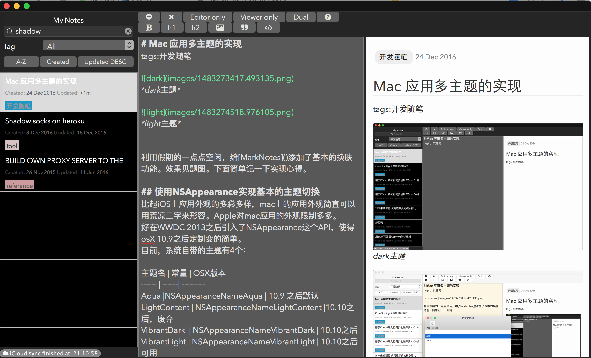
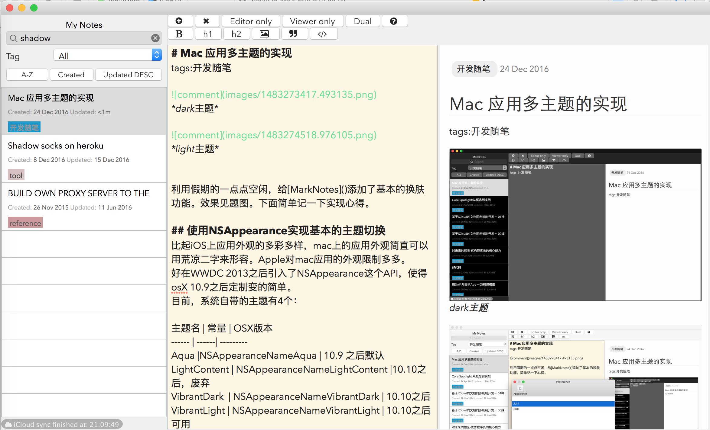

Mac 应用多主题的实现
tags:开发随笔
利用假期的一点点空闲，给MarkNotes添加了基本的换肤功能。效果如下:

dark主题

light主题
下面简单记一下实现心得。
使用NSAppearance实现基本的主题切换
比起iOS上应用外观的多彩多样，mac上的应用外观简直可以用荒凉二字来形容。Apple对mac应用的外观限制多多。
好在WWDC 2013之后引入了NSAppearance这个API，使得 osX 10.9之后定制变的简单。
目前，系统自带的主题有4个：
| 主题名 | 常量 | OSX版本 |
|---|---|---|
| Aqua | NSAppearanceNameAqua | 10.9 之后默认 |
| LightContent | NSAppearanceNameLightContent | 10.10之后，废弃 |
| VibrantDark | NSAppearanceNameVibrantDark | 10.10之后 |
| VibrantLight | NSAppearanceNameVibrantLight | 10.10之后可用 |
简单而言，有2中方法来设置外观：
- 使用NSVisualEffectView NSVisualEffectView和一般的NSView类似，但是它可以设置外观。将需要改变外观的UI组件都放进 NSVisualEffectView 中，使用InterfaceBuilder或者代码改变NSVisualEffectView的Appearance属性，所有的子组件的外观都会改变。
- 使用NSWindow NSWindow有一个Appearance属性。改变这个属性即可改变所有子元素的外观。
self.window.appearance = [NSAppearance appearanceNamed:NSAppearanceNameVibrantLight]; [self.window invalidateShadow];
文本编辑器的配色
作为一款主打markdown写作的应用，MarkNotes的一个特色是其强大的markdown语法支持。其中包括编辑器的markdown语法高亮。
之前我写过iOS版marknote语法高亮的实现，具体可以参考这篇文字。Mac版的实现与其类似，也是基于NSAttributedString/NSMutableAttributedString 让NSTextView支持显示样式变化来实现的。那么，当整个应用的外观有了主题之后，编辑器也需要自己的主题。
我的做法很简单。直接封装了一个叫ColorTheme的类，包含不同的属性来表达各种格式需要的颜色。其头文件如下：
#import <Foundation/Foundation.h> #import <Cocoa/Cocoa.h> @interface ColorTheme : NSObject @property (nonatomic, strong) NSColor* background; @property (nonatomic, strong) NSColor* foreground; @property (nonatomic, strong) NSColor* reservedWords; @property (nonatomic, strong) NSColor* link; @property (nonatomic, strong) NSColor* quote; @property (nonatomic, strong) NSColor* InlineCode; @property (nonatomic, strong) NSColor* blockCode; @property (nonatomic, strong) NSColor* blockQuote; @property (nonatomic, strong) NSColor* tags; @property (nonatomic, strong) NSAppearance* appAppearance; +(ColorTheme*) currentColorTheme; +(void) changeThemeTo:(NSString*) newTheme; @end
然后在实现文件中实现了两套颜色。比如light的实现如下：
+(ColorTheme *)lightTheme {
static ColorTheme *sharedInstance = nil;
static dispatch_once_t pred;
dispatch_once(&pred, ^{
sharedInstance = [[ColorTheme alloc] init];
sharedInstance.background = [NSColor colorWithCalibratedRed:0xFD/255.0 green:0xF5/255.0 blue:0xDC/255.0 alpha:0xFF/255.0]/* FDF5DCFF */; sharedInstance.foreground = [NSColor colorWithRed:2.0/16.0 green:2.0/16.0 blue:2.0/16.0 alpha:1.0];
sharedInstance.link = [NSColor colorWithRed:104.0/255.0 green:224.0/255.0 blue:152.0/255.0 alpha:1.0];
sharedInstance.quote = [NSColor lightGrayColor];
sharedInstance.InlineCode = [NSColor brownColor];
sharedInstance.blockCode = [NSColor colorWithRed:0.99 green:0.99 blue:0.99 alpha:1.0];
sharedInstance.blockQuote = [NSColor colorWithRed:125.0/255.0 green:210.0/255.0 blue:209.0/255.0 alpha:1.0];
sharedInstance.tags = [NSColor colorWithRed:1.0 green:106.0/255.0 blue:0.0 alpha:1.0];
sharedInstance.appAppearance = [NSAppearance appearanceNamed:NSAppearanceNameVibrantLight] ;
});
return sharedInstance;
}
其他
目前我只使用了light和dark两个主题。
Github上有人做了一个定制主题的工具：https://github.com/insidegui/AppearanceMaker 看起来很强大的样子。
回头有时间的时候可以研究一下试试。